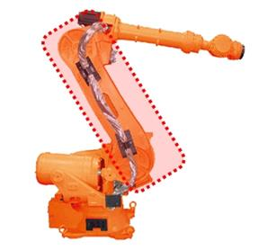
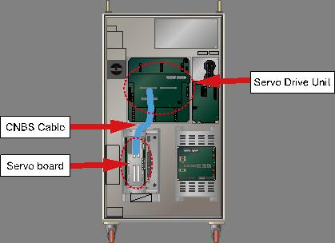
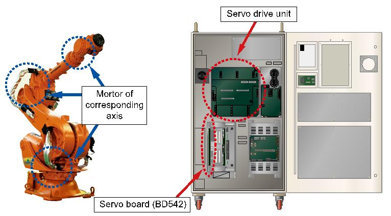

Warning
Be cautious. Examination while the power is on may cause an electrocution.
Previous error code: E0165 (○ axis) Impossible to sustain the servo lock
1.1.69.1. Outline
Power for the drive of Motor or the drive unit is not being supplied. The current that generated by a Servo control for the Robot or drive unit's operation is not being supplied. For such cases, the Servo Board detects an error and the controller will stop the release of brake and block the current that supplied to the motor or the drive unit.
1.1.69.2. Causes and examine methods
|
(1) Examine the Motor power line. n Check the wiring that connects the Robot and Controller. n Check the Robot's internal wiring. n Check the Controller's internal wiring.
(2) Examine the CNBS cable between the Controllers' internal Servo Board and the Servo AMP.
(3) Replace other components. |
(1) Examine the power line
Please turn off the primary power and remove the U, V, and W of drive unit for the corresponding axis and examine if short circuit exists in each phase. Please use equipment such as the multi meter (tester) and examine each phase's wiring one by one.
|
Warning Be cautious. Examination while the power is on may cause an electrocution. |
n Check the wiring that connects the Robot and Controller
Please remove the wirings that connect the controller, Robot or the drive unit to examine each phases (U, V, W) for ground, or a short circuit. If a short circuit is found, please replace the wire.

Figure 1.201 Basic Installation Diagram of the Robot and Control Period
n Check the Robot's internal wiring.
Examine for a short circuit, faulty on a wiring that connected to Robot's internal motor is required.

Figure 1.202 Robot's Internal Wiring
n Check the Controller's internal wiring.
Examine on a controller's internal AMP and installed wiring is required.

Figure 1.203 Controller internal side (Power unit)
(2) Examine the CNBS cable between the controller's internal servo board (DSP board) and the drive unit.
Please examine if the CNBS cable is installed properly. If the cable is not installed properly, or the cable is faulty, this error may occur.

Figure 1.204 Controller internal side (CNBS Cable)
(3) Replace other components.
Replace the component in order of Servo Board → Servo Drive Unit → Motor to confirm the occurrence of an error'.

Figure 1.205 Replacing other parts (such as servo boards, servo drive units, and motors)